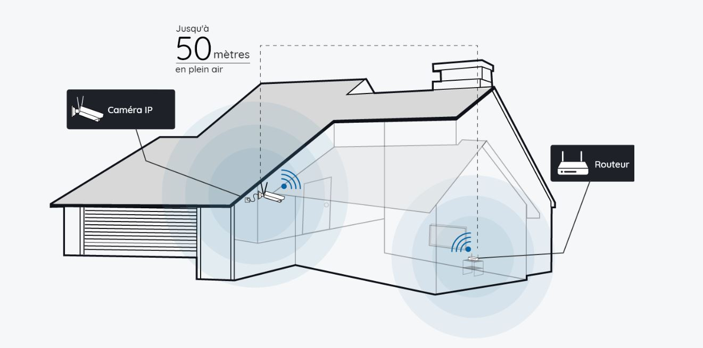

L'UC-01 est une caméra de surveillance à domicile abordable pour toutes et tous à la pointe de la technologie.
Fiche Technique de l'UC-01
- Une possibilité de voir les caméras à distance grâce à une application téléchargeable sur l'Apple Store et le Play Store.
- Possibilité de voir en direct et sur un mois en arrière !
- Une visibilité jusqu'à 50 mètres.
- Une capacité de visualiser même dans le noir.
- Une résolution 2,5 x Full HD, permettant de visualiser parfaitement ce qu'il se passe.
- Une dynamique HDR à la pointe de la technologie.
- Un système de bruitage reliant toutes les caméras pour prévenir un maximum de 500 Mhz.
- Des capteurs avertissant directement notre centre de contrôle et avertissant la police directement.